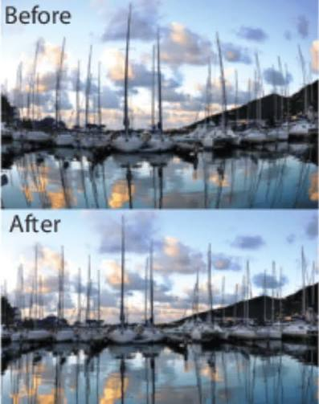
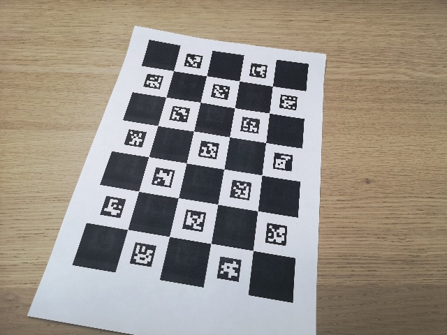

Webcam Calibration with OpenCV and ChArUco
A ready-to-use toolkit that calibrates any webcam in about 15 minutes. Clone it, edit one config file, print a board, capture images and calibrate.
1. Overview
Camera calibration normally means piecing together scripts, guessing board sizes and decoding error numbers. This project packages the whole process into one coherent tool. A single configuration file drives every script, from generating a print-ready board to undistorting a live camera feed.
config.py.For the underlying maths, the repository includes a theory guide covering the camera model, distortion and how calibration works, and a troubleshooting guide.
2. Why calibrate a camera?
Every real lens bends light slightly, so straight lines in the world appear curved in the image, most visibly near the edges. On top of that, an image alone does not say how far the camera's pixels are from its optical centre or what its focal length is. Both matter whenever software has to measure or reason about the real world from a picture.
Calibration estimates two things:
- Intrinsic matrix
K: the focal length and optical centre of the camera, in pixels. - Distortion coefficients: how the lens bends straight lines, stored as
[k1, k2, p1, p2, k3].
With these, any image from that camera can be corrected so that straight lines look straight again. This is a basic step for robotics, 3D reconstruction, SLAM, augmented reality and any task that measures distances or angles from images.

3. The ChArUco board
Calibration needs a target with a precisely known pattern. This project uses a ChArUco board, which combines a checkerboard with ArUco markers. The checkerboard corners give very precise points, while each marker carries a unique ID, so the software always knows which corner it is looking at.
That combination has practical benefits over a plain checkerboard:
- Corners can be detected even when the board is only partly visible, so images near the frame edges, where distortion is strongest, still count.
- Every detected corner is identified, so no extra step is needed to work out which corner is which.
- Poor detections can be rejected automatically, which is how the capture tool applies quality gating (at least 15 corners per saved image).
The default board has 8 × 6 squares, with 30 mm squares and 22 mm markers, and the generator produces it at the exact physical size.

4. The workflow
Six steps take you from a fresh clone to a calibrated camera. Each step is one script, and all of them read the same config.py.
config.py for your camera and board
Generate the boardPrint it at actual size
Capture images25 to 40 views with live detection
CalibrateWrites the YAML and a summary
ValidateCheck the result visually
Use itUndistort live, images or video
5. Step-by-step guide
Setup
git clone https://github.com/Vihaan30g/webcam-calibration-opencv.git cd webcam-calibration-opencv python3 -m venv .venv && source .venv/bin/activate # Windows: .venv\Scripts\activate pip install -r requirements.txt
opencv-contrib-python (already in requirements.txt), not plain opencv-python, because the ChArUco code needs the contrib build. If plain opencv-python is already installed, run pip uninstall opencv-python first so the two do not clash.Step 1: Edit config.py
| Setting | Meaning |
|---|---|
CAMERA_INDEX | 0 is the first camera. Try 1 or 2 for others. |
CAMERA_WIDTH / CAMERA_HEIGHT | Resolution to calibrate and later use. It must be supported by your camera. |
CAMERA_CODEC | MJPG gives high resolution at 30 fps on most USB webcams. |
SQUARES_X / SQUARES_Y, SQUARE_LENGTH, MARKER_LENGTH | Board geometry, in metres. Defaults: 8 × 6 squares, 30 mm and 22 mm. |
On Linux, list the modes your camera supports with v4l2-ctl --list-formats-ext -d /dev/video0.
Step 2: Generate and print the board
python3 scripts/generate_charuco.py
Print data/boards/charuco_board.pdf at 100% / "Actual size", never "fit to page". Mount it on something rigid and flat, such as foam board, glass or a clipboard. Then measure one square with a ruler. If it is not 30 mm, update SQUARE_LENGTH and MARKER_LENGTH in config.py to the measured values.
Step 3: Capture calibration images
python3 scripts/capture_images.py
Press s to save (accepted only when 15 or more corners are detected) and q to quit. Aim for 25 to 40 images:
- Fill every region of the frame, including the corners and edges, because distortion is strongest there.
- Tilt the board up to about 45 degrees in different directions.
- Vary the distance: near, medium and far.
- Hold still to avoid motion blur, and keep the lighting even.
- Do not change zoom or focus during the session.
Step 4: Calibrate
python3 scripts/calibrate.py --visualize
This writes data/calibration_results/calibration.yaml and calibration_summary.txt. Judge the result by the RMS reprojection error:
| RMS reprojection error | Quality |
|---|---|
| < 0.5 px | Excellent |
| 0.5 to 1.0 px | Good |
| 1.0 to 2.0 px | Acceptable |
| > 2.0 px | Recapture |
If a few images show a clearly higher per-image error in the summary, delete them from data/calibration_images/ and run the calibration again.
Step 5: Validate
python3 scripts/validate_calibration.py --save
Space shows the next image and q quits. One window shows the original on the left and the undistorted image on the right, where straight lines should now be straight. A second window shows detected corners in green and reprojected corners in red, and they should overlap.
Step 6: Use the calibration
# live camera, undistorted, press Space to save frames python3 scripts/capture_undistorted.py --output_dir path/to/output/ # one image / a folder / a video file python3 scripts/undistort.py --image photo.png --output_dir out/ python3 scripts/undistort.py --images_dir raw/ --output_dir out/ python3 scripts/undistort.py --video recording.mp4 --output_dir out/
6. Using the result in your code
The calibration is saved as a YAML file you can load in a few lines of Python:
import cv2, numpy as np, yaml
with open("data/calibration_results/calibration.yaml") as f:
cal = yaml.safe_load(f)
K = np.array(cal["camera_matrix"]["data"]).reshape(3, 3)
dist = np.array(cal["distortion_coefficients"]["data"]).reshape(1, -1)
size = (cal["image_width"], cal["image_height"])
new_K, roi = cv2.getOptimalNewCameraMatrix(K, dist, size, alpha=0)
map1, map2 = cv2.initUndistortRectifyMap(K, dist, None, new_K, size, cv2.CV_16SC2)
frame = cv2.imread("my_image.png")
und = cv2.remap(frame, map1, map2, cv2.INTER_LINEAR)
x, y, w, h = roi
und = und[y:y+h, x:x+w] # crop black bordersK is the 3 × 3 intrinsic matrix and dist is [k1, k2, p1, p2, k3] (the OpenCV "plumb bob" model). This is the same layout ROS 2 uses in camera_info (k and d), so the result can be used in ROS 2 pipelines directly.
7. Project structure
webcam-calibration-opencv/
config.py single source of truth for all settings
requirements.txt
scripts/
generate_charuco.py step 1 print-ready board (PNG + PDF)
capture_images.py step 2 live capture with corner detection
calibrate.py step 3 run calibration, write YAML
validate_calibration.py step 4 visual checks
capture_undistorted.py step 5a live undistorted capture
undistort.py step 5b image / folder / video undistortion
utils/
camera.py camera opening and resolution guards
charuco_utils.py board and detector setup
docs/
theory.md how and why calibration works
troubleshooting.md
assets/ images used in the documentation
data/ your images and results (git-ignored)
8. Requirements and more
- Requirements: Python 3.8+,
opencv-contrib-python4.7 or newer,numpy,PyYAMLandPillow. - Reusing for another camera: edit
config.py, emptydata/calibration_images/, and repeat steps 3 to 6. - Learn more: theory guide and troubleshooting guide.
- License: MIT, see the LICENSE file.